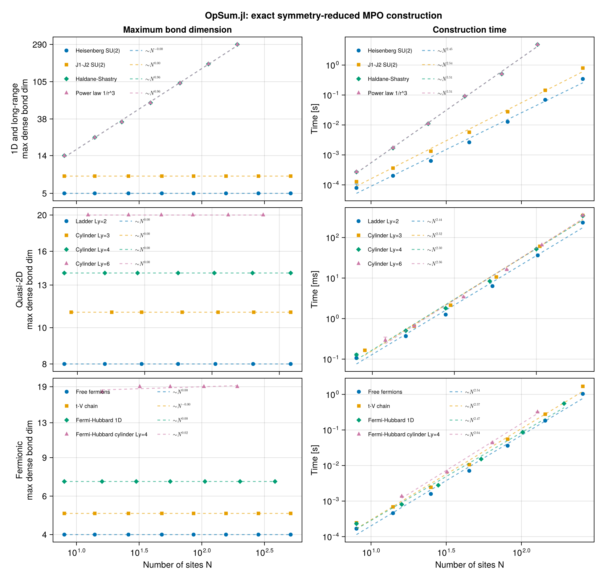

Multi-body interactions
Everything so far has been two-body. couple is not limited to pairs: nesting it builds a caterpillar fusion tree, so three- and four-body SU(2)-invariant interactions are expressible directly, with the intermediate fusion channels as explicit physical labels.
This page shows how those channels work, which ones exist, and what they cost in bond dimension.
using OpSum: OpSum
include(joinpath(pkgdir(OpSum), "examples", "common.jl"))
V = SU2Space(1 // 2 => 1)
S = spin(V)OpSum.LocalOp{ComplexF64, OpSum.IrrepTensorOperators.IrrepOperator{TensorKitSectors.SU2Irrep}}:
(1.224744871391589 + 0.0im) * ITO(Irrep[SU₂](1), n=1)Three-body terms and the channel constraint
A three-body scalar built from three rank-1 operators is
\[\left( \vec{S}_1 \times \vec{S}_2 \right) \cdot \vec{S}_3\]
and in the caterpillar basis it is couple(couple(S[1], S[2]; to = j₁₂), S[3]; to = 0). The intermediate label $j_{12}$ is a genuine degree of freedom, but it is not free: the last inner line must be able to fuse with the final operator charge to reach the total charge. Since each $\vec{S}$ carries charge 1, reaching a singlet forces $j_{12} = 1$:
for j12 in 0:2
try
H = couple(couple(S[1], S[2]; to = SU2Irrep(j12)), S[3]; to = SU2Irrep(0))
r = build("K=3 j12=$j12", H, fill(V, 3); quiet = true)
println(" j12=$j12 valid D_dense=$(r.Ddense) lossless=$(islossless(H, fill(V, 3)))")
catch e
println(" j12=$j12 rejected: ", first(sprint(showerror, e), 72))
end
end j12=0 rejected: ArgumentError: couple: no pair of terms of the operands fuses to Irrep[S
j12=1 valid D_dense=3 lossless=true
j12=2 rejected: ArgumentError: couple: no pair of terms of the operands fuses to Irrep[SThe rejected cases are not a limitation but a consistency check: those operators do not exist as SU(2) scalars.
Four-body terms
With four rank-1 operators there are two inner lines, $(j_{12}, j_{123})$. The same reasoning forces $j_{123} = 1$, leaving exactly three singlet channels:
channels = Tuple{Int, Int}[]
for j12 in 0:2, j123 in 0:3
try
H = couple(
couple(couple(S[1], S[2]; to = SU2Irrep(j12)), S[3]; to = SU2Irrep(j123)),
S[4]; to = SU2Irrep(0)
)
r = build("k4", H, fill(V, 4); quiet = true)
push!(channels, (j12, j123))
println(" (j12=$j12, j123=$j123) valid D_dense=$(r.Ddense)")
catch
nothing
end
end
channels3-element Vector{Tuple{Int64, Int64}}:
(0, 1)
(1, 1)
(2, 1)These three are not merely distinct labels — they are mutually orthogonal operators, i.e. a complete orthogonal basis for four-body SU(2)-invariant interactions on four ordered sites:
let sites4 = fill(V, 4)
ops = [
instantiate(
couple(
couple(couple(S[1], S[2]; to = SU2Irrep(a)), S[3]; to = SU2Irrep(b)),
S[4]; to = SU2Irrep(0)
),
sites4
) for (a, b) in channels
]
[
round(real(dot(ops[i], ops[j]) / (norm(ops[i]) * norm(ops[j]))); digits = 10)
for i in eachindex(ops), j in eachindex(ops)
]
end3×3 Matrix{Float64}:
1.0 0.0 0.0
0.0 1.0 -0.0
0.0 -0.0 1.0A note on ring exchange
The caterpillar tree fixes the site order, so the $j_{12}$ channel corresponds to the pairing $(\vec{S}_1\!\cdot\!\vec{S}_2)(\vec{S}_3\!\cdot\!\vec{S}_4)$ — the j₁₂ = 0 channel is exactly that product. The other two pairings, $(\vec{S}_1\!\cdot\!\vec{S}_3)(\vec{S}_2\!\cdot\!\vec{S}_4)$ and $(\vec{S}_1\!\cdot\!\vec{S}_4)(\vec{S}_2\!\cdot\!\vec{S}_3)$, are linear combinations of all three channels, with coefficients given by recoupling (F-move) symbols.
So a specific physical ring-exchange operator is a particular linear combination of the three channels rather than a single one. Since every combination has the same MPO bond structure, the cost story below is unaffected by which one you pick.
A four-body model on a ladder
To see multi-body terms in a Hamiltonian rather than in isolation, add plaquette terms to a two-leg ladder. With column-major ordering the four sites of the plaquette at column $x$ are the consecutive indices $2x-1, \ldots, 2x+2$, so the j₁₂ = 0 channel couples rung $x$ to rung $x+1$.
function plaquette_ladder(Lx; J = 1.0, K = 0.3, j12 = 0)
bonds = ladder_bonds(Lx, 2)
two_body = [J * dot(S[i], S[j]) for (i, j) in bonds]
plaquettes = [
K * couple(
couple(couple(S[4x - 3], S[4x - 2]; to = SU2Irrep(j12)), S[4x - 1]; to = SU2Irrep(1)),
S[4x]; to = SU2Irrep(0)
) for x in 1:(div(Lx, 2))
]
return sum(vcat(two_body, plaquettes)), fill(V, 2Lx)
end
H4, sites4 = plaquette_ladder(6)
res4 = build("ladder + plaquettes", H4, sites4)
islossless(H4, sites4)trueCompare against the pure two-body ladder to isolate what the four-body terms cost:
let Lx = 6
two = build("ladder only", sum([dot(S[i], S[j]) for (i, j) in ladder_bonds(Lx, 2)]), fill(V, 2Lx); quiet = true)
println(" two-body only: D=$(two.D) D_dense=$(two.Ddense)")
println(" with plaquettes: D=$(res4.D) D_dense=$(res4.Ddense)")
end two-body only: D=4 D_dense=8
with plaquettes: D=5 D_dense=9And the bond dimension still saturates with system size:
for Lx in (4, 6, 8, 12)
H, s = plaquette_ladder(Lx)
r = build("plaq", H, s; quiet = true)
println(" Lx=$(rpad(Lx, 3)) N=$(rpad(2Lx, 3)) D=$(rpad(r.D, 3)) D_dense=$(r.Ddense)")
end Lx=4 N=8 D=4 D_dense=8
Lx=6 N=12 D=5 D_dense=9
Lx=8 N=16 D=5 D_dense=9
Lx=12 N=24 D=5 D_dense=9Scaling
julia --project=benchmark scripts/plot_benchmarks.jl --run --sweep full
This page was generated using Literate.jl.